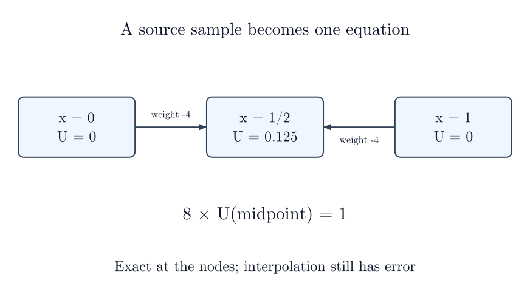
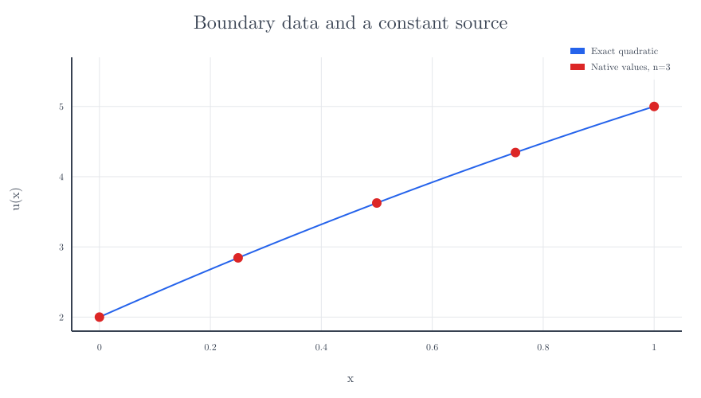
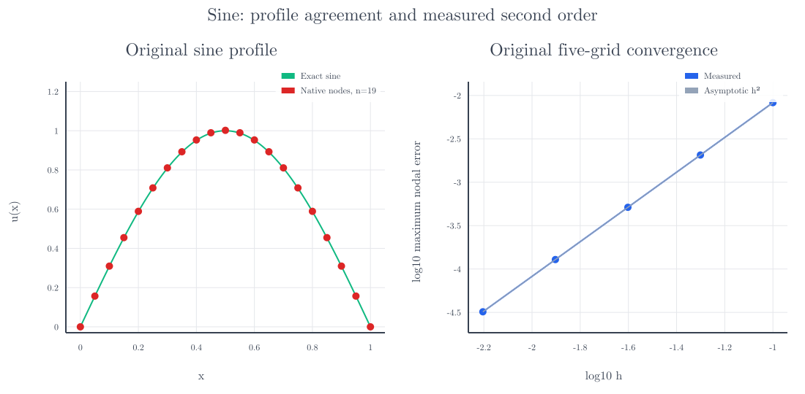
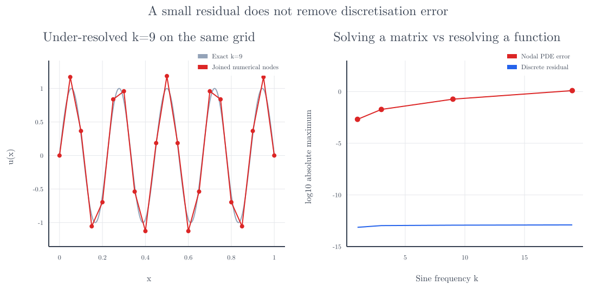
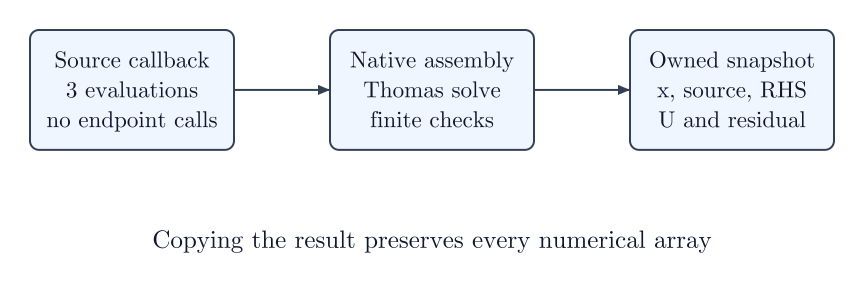

Finite differences: from a boundary-value problem to a checked tridiagonal solve
Abstract
Given a source f and endpoint values, reconstruct u on the unit interval from −u''=f. The unknown is a function, so a numerical solver must choose both a finite representation and a way to measure its error. A uniform central-difference stencil gives a tridiagonal system solved in linear work by the native Thomas solver. This report starts with one unknown, inspects actual assembly with nonzero boundaries, retains the original sine refinements, and separates a small discrete residual from error in the continuous solution.
The method: sample, eliminate the boundaries, solve
Let n be the number of interior points, h=1/(n+1), and x_i=ih. With U_0=α and U_{n+1}=β, the three-point approximation is
The interior matrix has diagonal 2/h² and off-diagonals −1/h². Move the known endpoint terms to the RHS with positive signs: add α/h² to its first entry, then β/h² to its last. When n=1, both additions belong to the same equation. The native result retains the source samples before these additions and the assembled RHS after them.
For an interior vector v extended by zero endpoints,
Thus the matrix is symmetric positive definite. Its special tridiagonal structure permits Thomas elimination without pivoting. Forward elimination removes one sub-diagonal entry per row; backward substitution recovers one unknown per row. Both work and storage are O(n), in addition to the n source-callback evaluations. This says nothing about their individual costs or the runtime of a dense general solver.
One unknown: eight times the midpoint value equals one
Take f=1, zero endpoints and n=1. The spacing is 1/2, so the sole equation is 8U_1=1 and U_1=1/8. The exact solution x(1−x)/2 has the same three nodal values. If we join the numerical nodes by straight segments, the value at x=1/4 is 1/16, whereas the exact quadratic is 3/32. Nodal exactness does not make a straight-line representation exact between the nodes.
#include <dm/dm.hpp>
namespace dm=datamunge;
int main(){
std::filesystem::create_directories("build");
const auto r=dm::algorithms::finite_difference_poisson_solve([](double){return 1.;},0,0,1);
const double joined=dm::algorithms::linear_interpolate(r.x,r.u,.25),exact=.25*.75/2;
std::print("| node | x | native U |\n| ---: | ---: | ---: |\n");
for(std::size_t i=0;i<r.x.size();++i)std::print("| {} | {} | {} |\n",i,r.x[i],r.u[i]);
std::print("\nActual diagonal {}; off-diagonal {}; RHS {}; discrete residual {}.\n",r.diagonal,r.off_diagonal,r.rhs[0],r.max_abs_residual);
std::print("At x=0.25: joined nodes {}; exact {}; absolute error {}.\n",joined,exact,std::abs(joined-exact));
dm::graphics::Diagram g(62,1100);dm::graphics::DiagramNodeStyle b;b.width=3.1;b.height=1.6;b.font_size=24;
g.node("left",{0,0},"x = 0\nU = 0",b).node("mid",{5,0},std::format("x = 1/2\nU = {}",r.u[1]),b).node("right",{10,0},"x = 1\nU = 0",b).edge("left","mid","weight -4").edge("right","mid","weight -4");
g.text({5,2.6},"A source sample becomes one equation",28).text({5,-2.3},std::format("{} × U(midpoint) = {}",r.diagonal,r.rhs[0]),29).text({5,-3.7},"Exact at the nodes; interpolation still has error",24).save_svg("build/fd_tiny.svg");
if(r.u[1]!=.125||std::abs(joined-exact)!=.03125)throw std::runtime_error("tiny identity");
}| node | x | native U |
|---|---|---|
| 0 | 0 | 0 |
| 1 | 0.5 | 0.125 |
| 2 | 1 | 0 |
Actual diagonal 8; off-diagonal -4; RHS 1; discrete residual 0. At x=0.25: joined nodes 0.0625; exact 0.09375; absolute error 0.03125.

Three unknowns: inspect the actual boundary contributions
Use f=1, α=2, β=5 and n=3. Then h=1/4 and the actual system is
The first RHS is 1+16×2=33; the last is 1+16×5=81. Elimination gives pivots 32,24,64/3. Substitution yields 91/32,29/8,139/32. The program reads the actual source, RHS and residual from the native result; it does not reassemble or solve the system in the report. Its exact reference is 2+3x+x(1−x)/2.
#include <dm/dm.hpp>
namespace dm=datamunge;
int main(){
std::filesystem::create_directories("build");
const auto r=dm::algorithms::finite_difference_poisson_solve([](double){return 1.;},2,5,3);
std::print("| interior x | source sample | assembled RHS | solved U | residual |\n| ---: | ---: | ---: | ---: | ---: |\n");
for(std::size_t i=0;i<r.source.size();++i)std::print("| {:.2f} | {:.0f} | {:.0f} | {:.5f} | {:.2e} |\n",r.x[i+1],r.source[i],r.rhs[i],r.u[i+1],r.residual[i]);
const auto one=dm::algorithms::finite_difference_poisson_solve([](double){return 2.;},2,5,1);
std::print("\nOne-row control: source {}; left +8; right +20; assembled RHS {}; diagonal {}; U {}.\n",one.source[0],one.rhs[0],one.diagonal,one.u[1]);
std::vector<double>x,y;for(int i=0;i<=200;++i){const double t=i/200.;x.push_back(t);y.push_back(2+3*t+t*(1-t)/2);}
auto p=dm::graphics::RPlot::create();p.line(x,y,"Exact quadratic",{37,99,235},2).points(r.x,r.u,"Actual native nodes",{220,38,38},6).title("Boundary data and a constant source").x_label("x").y_label("u(x)").y_limits(1.8,5.7).legend({"Exact quadratic","Native values, n=3"},{{37,99,235},{220,38,38}}).size(880,500).save_svg("build/fd_boundaries.svg");
}| interior x | source sample | assembled RHS | solved U | residual |
|---|---|---|---|---|
| 0.25 | 1 | 33 | 2.84375 | 0.00e+00 |
| 0.50 | 1 | 1 | 3.62500 | 0.00e+00 |
| 0.75 | 1 | 81 | 4.34375 | 0.00e+00 |
One-row control: source 2; left +8; right +20; assembled RHS 30; diagonal 8; U 3.75.

Why second order is conditional
For an exact solution with bounded continuous fourth derivative, Taylor expansion gives an O(h²) truncation error. A discrete maximum-principle barrier w_i=x_i(1−x_i)/2 satisfies Aw=1 and max w_i≤1/8. It gives the exact-arithmetic inverse bound ||A^{-1}||∞≤1/8, and therefore
This bound concerns the exact solution of the discrete equations with exact source samples. Floating-point assembly and solution add their own errors. A recomputed residual r=AÛ−d instead bounds distance to the exact solution of that assembled discrete system by ||Û−U||∞≤||r||∞/8 in exact residual arithmetic. A small residual is not a bound on the truncation error. The native residual uses the stored binary64 matrix and RHS, evaluates products and sums in long double, then stores rounded doubles. It is a diagnostic, not a certified interval bound.
The stencil samples f only at the interior nodes. No generic second-order promise applies to arbitrary discontinuous forcing, unresolved features, nonsmooth solutions or input callbacks whose samples are already inaccurate. Joining nodes requires a separate representation; linear interpolation adds its own O(h²) error when u has bounded second derivative. This report uses no external dataset because manufactured solutions provide exact controls for those distinct claims.
Preserve the original sine profile and refinements
Keep −u''=π²sin(πx), zero endpoints, n=19 for the profile and the original n=9,19,39,79,159 refinements. Each grid includes its midpoint. On these grids the sampled sine is an eigenvector with eigenvalue λ_h=4sin²(πh/2)/h². Thus the exact discrete solution is (π²/λ_h)sin(πx_i), and the maximum nodal error is π²/λ_h−1. This supplies an independent analytical prediction for the measured error and its limiting h² coefficient π²/12.
#include <dm/dm.hpp>
namespace dm=datamunge;
int main(){
std::filesystem::create_directories("build");
constexpr double pi=std::numbers::pi_v<double>;
const auto f=[](double x){return pi*pi*std::sin(pi*x);};
const auto r=dm::algorithms::finite_difference_poisson_solve(f,0,0,19);
std::vector<double>x,y;for(int i=0;i<=200;++i){const double t=i/200.;x.push_back(t);y.push_back(std::sin(pi*t));}
std::print("| n | h | maximum nodal error | eigenmode prediction | previous/current | discrete residual |\n| ---: | ---: | ---: | ---: | ---: | ---: |\n");
std::vector<double>lh,le,guide;double previous=0;
for(int n:{9,19,39,79,159}){
const auto s=dm::algorithms::finite_difference_poisson_solve(f,0,0,n);
const auto e=dm::algorithms::interpolation_error_scan([&](double t){return dm::algorithms::linear_interpolate(s.x,s.u,t);},[](double t){return std::sin(pi*t);},s.x);
const double lambda=4*std::pow(std::sin(pi*s.h/2),2)/(s.h*s.h),predicted=pi*pi/lambda-1;
std::print("| {} | {:.6f} | {:.3e} | {:.3e} | {:.6f} | {:.3e} |\n",n,s.h,e.max_abs_error,predicted,previous?previous/e.max_abs_error:0,s.max_abs_residual);
lh.push_back(std::log10(s.h));le.push_back(std::log10(e.max_abs_error));guide.push_back(std::log10(pi*pi*s.h*s.h/12));previous=e.max_abs_error;
if(std::abs(e.max_abs_error-predicted)>2e-11)throw std::runtime_error("sine eigenmode check");
}
auto profile=dm::graphics::RPlot::create();profile.line(x,y,"Exact sine",{16,185,129},2).points(r.x,r.u,"Native n=19",{220,38,38},5).title("Original sine profile").x_label("x").y_label("u(x)").y_limits(-.03,1.25).legend({"Exact sine","Native nodes, n=19"},{{16,185,129},{220,38,38}});
auto error=dm::graphics::RPlot::create();error.line(lh,le,"Measured",{37,99,235},2).points(lh,le,"",{37,99,235},5).line(lh,guide,"Asymptotic h²",{148,163,184},1.5).title("Original five-grid convergence").x_label("log10 h").y_label("log10 maximum nodal error");
dm::graphics::RLayout::create(1,2).add(profile).add(error).size(1100,540).title("Sine: profile agreement and measured second order").fit_panels().save_svg("build/fd_original.svg");
}| n | h | maximum nodal error | eigenmode prediction | previous/current | discrete residual |
|---|---|---|---|---|---|
| 9 | 0.100000 | 8.265e-03 | 8.265e-03 | 0.000000 | 1.614e-14 |
| 19 | 0.050000 | 2.059e-03 | 2.059e-03 | 4.014859 | 7.333e-14 |
| 39 | 0.025000 | 5.142e-04 | 5.142e-04 | 4.003704 | 5.229e-13 |
| 79 | 0.012500 | 1.285e-04 | 1.285e-04 | 4.000925 | 1.469e-12 |
| 159 | 0.006250 | 3.213e-05 | 3.213e-05 | 4.000231 | 5.990e-12 |

Small residual, large discretisation error: change the frequency
The n=19 grid resolves the first sine mode well. For sin(kπx), the discrete eigenvalue is 4sin²(kπh/2)/h² while the continuous one is (kπ)². For 1≤k≤n the exact discrete amplitude gain is their ratio. Increasing k at fixed h makes the difference important; the direct solver can still give a tiny residual. Smoothness alone does not ensure a small error on a fixed grid: the fourth-derivative bound grows as k⁴.
#include <dm/dm.hpp>
namespace dm=datamunge;
int main(){
std::filesystem::create_directories("build");
constexpr double pi=std::numbers::pi_v<double>;
std::print("| frequency k | predicted amplitude gain | maximum nodal error | discrete residual |\n| ---: | ---: | ---: | ---: |\n");
std::vector<double>ks,errors,residuals;
auto p=dm::graphics::RPlot::create();
for(int k:{1,3,9,19}){
const double w=k*pi;const auto r=dm::algorithms::finite_difference_poisson_solve([w](double x){return w*w*std::sin(w*x);},0,0,19);
const auto e=dm::algorithms::interpolation_error_scan([&](double t){return dm::algorithms::linear_interpolate(r.x,r.u,t);},[w](double t){return std::sin(w*t);},r.x);
const double gain=w*w*r.h*r.h/(4*std::pow(std::sin(w*r.h/2),2));
std::print("| {} | {:.6f} | {:.6f} | {:.3e} |\n",k,gain,e.max_abs_error,r.max_abs_residual);
ks.push_back(k);errors.push_back(std::log10(e.max_abs_error));residuals.push_back(std::log10(std::max(r.max_abs_residual,1e-16)));
if(k==9){std::vector<double>x,y;for(int i=0;i<=800;++i){double t=i/800.;x.push_back(t);y.push_back(std::sin(w*t));}p.line(x,y,"Exact k=9",{148,163,184},2).line(r.x,r.u,"Joined numerical nodes",{220,38,38},2).points(r.x,r.u,"",{220,38,38},4);}
}
p.title("Under-resolved k=9 on the same grid").x_label("x").y_label("u(x)");
auto e=dm::graphics::RPlot::create();e.line(ks,errors,"Nodal error",{220,38,38},2).points(ks,errors,"",{220,38,38},5).line(ks,residuals,"Discrete residual",{37,99,235},2).title("Solving a matrix vs resolving a function").x_label("Sine frequency k").y_label("log10 absolute maximum").legend({"Nodal PDE error","Discrete residual"},{{220,38,38},{37,99,235}}).y_limits(-15,3);
dm::graphics::RLayout::create(1,2).add(p).add(e).size(1100,540).title("A small residual does not remove discretisation error").fit_panels().save_svg("build/fd_resolution.svg");
}| frequency k | predicted amplitude gain | maximum nodal error | discrete residual |
|---|---|---|---|
| 1 | 1.002059 | 0.002059 | 7.333e-14 |
| 3 | 1.018713 | 0.018713 | 1.072e-13 |
| 9 | 1.184612 | 0.184612 | 1.179e-13 |
| 19 | 2.240622 | 1.240622 | 1.252e-13 |

Checked inputs and owned evidence
The original four-argument function still returns the boundary-inclusive vector. The new finite_difference_poisson_solve returns those same numerical values plus an owned snapshot of the actual grid, samples, RHS and residuals. It evaluates the source exactly once per interior node, in increasing coordinate order. Neither function samples the endpoints. Source exceptions propagate unchanged. Callback side effects already performed cannot be undone if a later sample fails.
Both APIs require n>0, a nonempty callback and finite boundary/source values. The legacy signed count n+2 must fit int; impossible signed grids are rejected before allocation or callbacks. Finite-input arithmetic overflow also raises an exception. The ordinary solve has O(n) storage; the diagnostic result has additional O(n) numeric arrays. These are outputs describing one solve, without an optional iteration-history quota.
#include <dm/dm.hpp>
namespace dm=datamunge;
int main(){
std::filesystem::create_directories("build");
int callbacks=0;const auto f=[&](double){++callbacks;return 1.;};
int rejected=0;
try{(void)dm::algorithms::finite_difference_poisson(f,0,0,0);}catch(const std::invalid_argument&){++rejected;}
try{(void)dm::algorithms::finite_difference_poisson({},0,0,1);}catch(const std::invalid_argument&){++rejected;}
try{(void)dm::algorithms::finite_difference_poisson(f,std::numeric_limits<double>::infinity(),0,1);}catch(const std::invalid_argument&){++rejected;}
try{(void)dm::algorithms::finite_difference_poisson(f,0,0,INT_MAX);}catch(const std::length_error&){++rejected;}
std::print("Invalid zero grid, missing source, nonfinite boundary and oversized grid: {}/4 rejected; callbacks {}.\n",rejected,callbacks);
const auto source=[&](double x){++callbacks;return x;};auto r=dm::algorithms::finite_difference_poisson_solve(source,0,0,3);const auto kept=r;
r.x[1]=99;r.source[0]=99;r.rhs[0]=99;r.u[1]=99;r.residual[0]=99;
std::print("Successful n=3 solve: callbacks {}; retained source[0] {}; retained U[1] {:.8f}; later source and U edits {}.\n",callbacks,kept.source[0],kept.u[1],r.u[1]);
const auto ordinary=dm::algorithms::finite_difference_poisson([](double x){return x;},0,0,3);
std::print("Legacy vector equals retained diagnostic values: {}.\n",ordinary==kept.u);
dm::graphics::Diagram g(60,1100);dm::graphics::DiagramNodeStyle b;b.width=3.4;b.height=2;b.font_size=23;
g.node("callback",{0,0},"Source callback\n3 evaluations\nno endpoint calls",b).node("solve",{5,0},"Native assembly\nThomas solve\nfinite checks",b).node("result",{10,0},"Owned snapshot\nx, source, RHS\nU and residual",b).edge("callback","solve").edge("solve","result").text({5,-2.5},"Copying the result preserves every numerical array",25).save_svg("build/fd_controls.svg");
if(rejected!=4||callbacks!=3||ordinary!=kept.u)throw std::runtime_error("checked controls");
}Invalid zero grid, missing source, nonfinite boundary and oversized grid: 4/4 rejected; callbacks 0. Successful n=3 solve: callbacks 3; retained source[0] 0.25; retained U[1] 0.03906250; later source and U edits 99. Legacy vector equals retained diagnostic values: true.

What these checks establish
The original smooth sine example shows second-order nodal convergence, supported by a closed-form discrete eigenmode prediction. Tiny systems expose the boundary signs and the one-row case. Polynomial references show why exact nodes and an exact continuous field are different claims. Frequency controls show that a small linear-system residual can coexist with a large discretisation error. The API validates its numerical domain; it does not certify source smoothness, conditioning, a continuous error bound, or the adequacy of a chosen grid for a particular application.
References
- P.-O. Persson, [Finite Difference Methods for PDEs](https://persson.berkeley.edu/math228b/html/finite_difference_methods_for_PDEs.html), sections Boundary Value Problems, Local Truncation Error, Stability and Convergence. The notes write u''=f; this report and the native API use −u''=f. The stencil, stability and eigenmode analysis are adjusted consistently for that sign.
- I. J. Sobey, [Finite Differences](https://info.sjc.ox.ac.uk/scr/sobey/iblt/chapter1/notes/node4.html), equations 12–18 and Note 4. The native implementation here fixes the interval and uses uniform Dirichlet nodes; it does not implement those notes' other boundary conditions or time-dependent extensions.